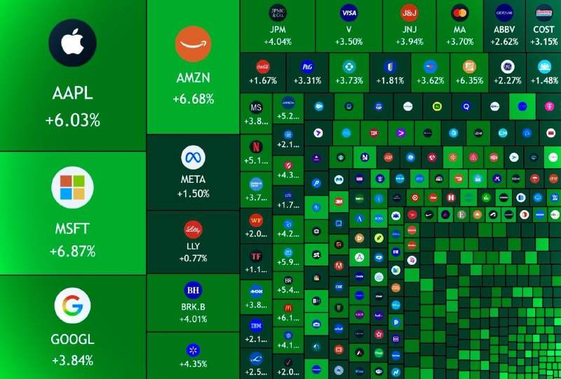
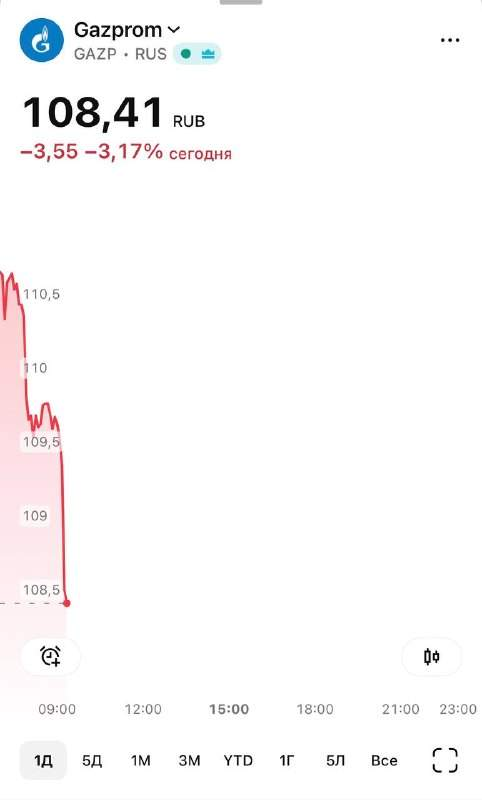
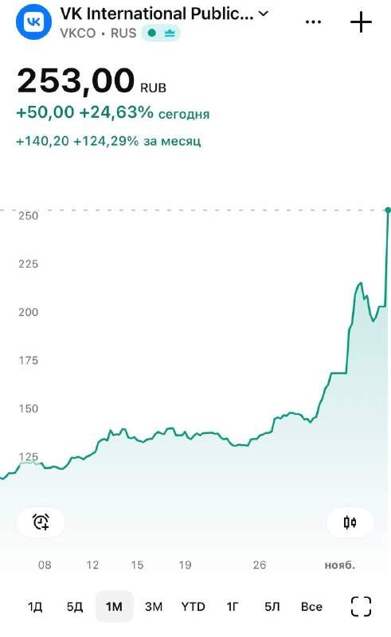
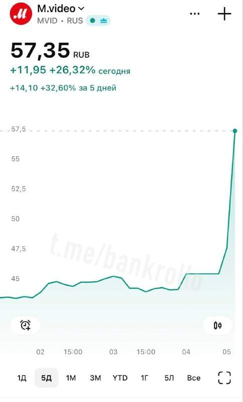
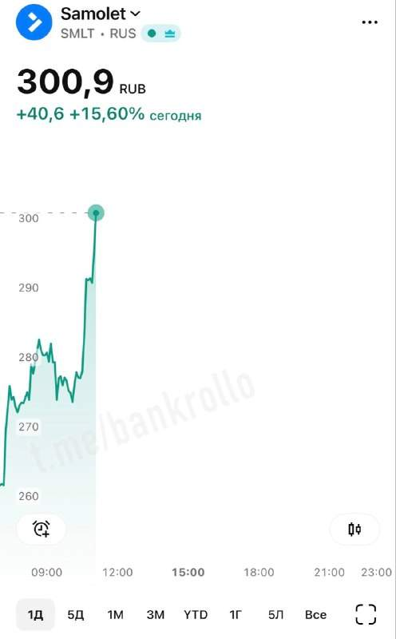
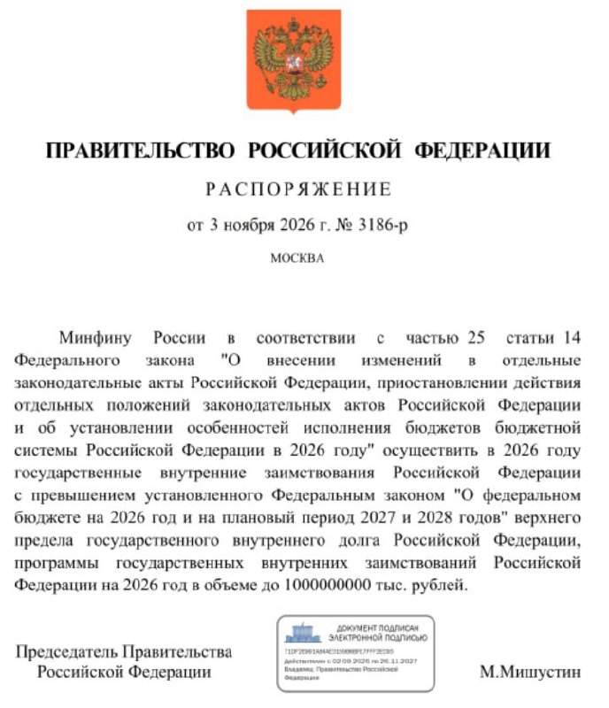
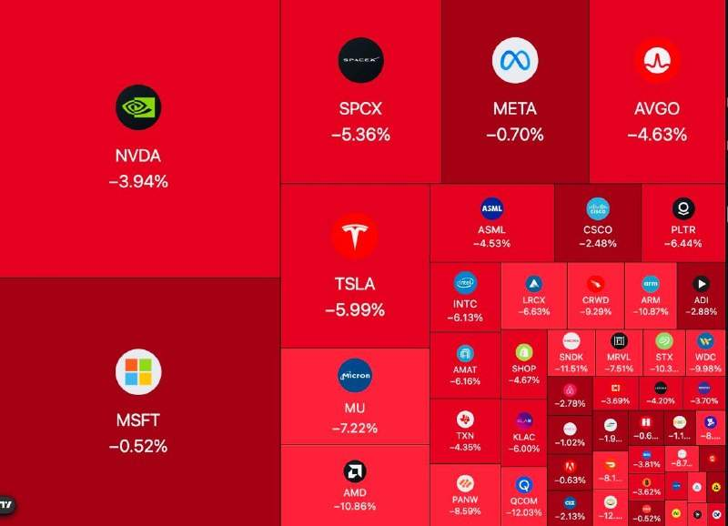
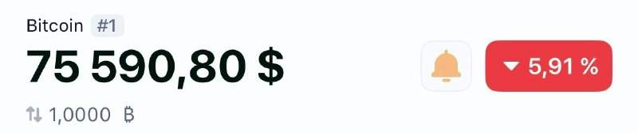
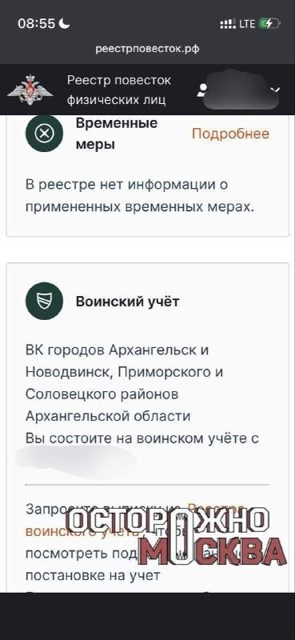

Американский рынок вырос на $1,2 трлн за сегодня. Это две капитализации всего российского фондового рынка. @bankrollo

Американский рынок вырос на $1,2 трлн за сегодня. Это две капитализации всего российского фондового рынка. @bankrollo
Дроны атаковали Рязанскую область. Загорелись промышленные объекты, пострадал местный житель, сообщил губернатор Павел Малков. Повреждены линии электропередачи, в части города возникли перебои со светом. @bankrollo
Россияне массово отказывались от покупки новых авто в октябре. Продажи новых легковушек рухнули на 20%, до 132 тысяч машин год к году, следует из данных Автостата. Лидером осталась Lada, однако продажи марки упали на 11%, до 29 тысяч машин. До конца года продажи могут вырасти из-за желания покупателей приобрести машину до очередного повышения утильсбора, считают эксперты. @bankrollo
Российские банки не хотят открывать вклады для бедных, потому что у тех нет денег. Финансисты попросили отложить запуск социальных вкладов для части банков до 2028–2031 годов: внедрение обойдётся каждому небольшому банку в 10–20 млн рублей, а спрос почти отсутствует. За десять месяцев во всех системно значимых банках подали лишь около 15 тысяч заявок на такие вклады и счета — Коммерсантъ. @bankrollo

В Газпроме не рады результатам выборов в США. @bankrollo
Поражение республиканцев — это поражение Трампа. Его эпоха закончилась, считает его бывший сторонник Карлсон. @bankrollo

VK снова ракетит на Мосбирже. С утра акции прибавили почти 25%, а за месяц 125%. Причём аналитики ранее говорили, что реальных причин для такого анормального роста нет. @bankrollo
США могут возобновить помощь Украине после победы демократов в Конгрессе — Reuters. С января они смогут решать, какие вопросы будут вынесены на голосование и когда. Это может позволить им принять новый пакет помощи Украине большинством голосов, чтобы преодолеть вето Трампа. Ранее демократы объявили помощь Киеву приоритетом. @bankrollo
Почти 60% взрослых парагвайцев (около 3 млн человек) лишились своих денег. Это произошло из-за вмешательства ЦБ в работу крупнейшего банка Парагвая Ueno Bank. Регулятор заморозил деньги банка из-за серьёзного падения показателя достаточности капитала, что привело к блокировке счетов миллионов клиентов и государственных пенсионных фондов. Из-за этого перестали работать мобильный банкинг, банкоматы и карты банка. Несколько руководителей банка Ueno Bank уже арестованы, а глава ЦБ Парагвая подал в отставку. Клиенты банка устраивают акции протеста и требуют вернуть им деньги и призывают к импичменту президента. @bankrollo
В Екатеринбурге ОПГ похищала мужчин и отправляла на СВО. По версии следствия, банда находила нуждающихся в деньгах мужчин, давала им жильё, а затем заставляла подписать контракт и после зачисления выплат отбирала деньги. Чтобы получить доступ к выплатам и компенсациям, участники группы оформляли доверенности, дополнительные банковские карты и даже фиктивные браки, сообщили в МВД. Семерым участникам вменяют по 12 эпизодов похищения и вымогательства, а одному из них — три грабежа. @bankrollo

Акции М-Видео с утра взлетели на 30% без видимых причин. @bankrollo

Самолет подлетел выше 15% после достижения банками-кредиторами застройщика договорённостей о «комплексной программе улучшения финансового положения компании». @bankrollo

Правительство разрешило Минфину занять в 2026 году на внутреннем рынке до 1 трлн рублей сверх установленных пределов. @bankrollo
Россияне кинулись скупать магний. Спрос на него вырос на 30% с начала года, пишут РИА Новости. При этом 60% всех продаж приходится на женщин. @bankrollo
Samsung встроил переводы USDC во все устройства Galaxy в США. Крипта будет отображаться в приложении Samsung Wallet. Оттуда её можно перевести в 60 стран по всему миру, получателю придут деньги на его счёт в местном банке и в местной валюте. @bankrollo
Россиянам не стоит ездить в Иран, может начаться новая эскалация — МИД РФ. @bankrollo

Американский бигтех летит вниз из-за победы демократов на выборах. За час торгов Nasdaq потерял $400 млрд, при этом нетехнологические компании продолжают расти. Демократы победили в ключевых штатах, где идёт строительство дата-центров, и обещали ввести на них мораторий или взять под жесткий контроль. @bankrollo
Демократы в Сенате США готовят расследование против крупнейшего банка США и мира JPMorgan за связь с Эпштейном. Акции банка упали на 5%. @bankrollo
Canva одним днём сократила 1200 сотрудников — это 22% штата — но сделала это так, что сокращением восхищается весь интернет. Каждый сотрудник получит: MacBook, шесть месячных зарплат, годовую медстраховку, годовую подписку на LinkedIn Premium и грант $10 тысяч на собственный бизнес. @bankrollo

Биткоин упал ниже $76000. @bankrollo
«Индекс страха» Уолл-стрит взлетел вплотную до «паники и шторма», самого высокого значения из возможных. Индекс вырос на 70% за один день, это крупнейший скачок с февраля 2018 года. Даже в марте 2020 года, во время пандемийного обвала мировой экономики, не было такого роста. @bankrollo
Россияне могут есть крупу и фасоль, если не хватает денег на мясо, — Финансовый университет при Правительстве РФ. Картофель, фасоль, горох и чечевица богаты белком и могут заменить мясо, но полностью исключать животные продукты не стоит, считает экономист Ольга Климова. Также, чтобы сэкономить, можно искать скидки и акции или уменьшать порции. @bankrollo
Путин поручил ещё ужесточить контроль за финансовыми операциями россиян — ТАСС. @bankrollo

Москвича забрали в армию прямо на улице во время прогулки с собакой — Осторожно, Москва. Утром 5 ноября мужчину встретил участковый, разрешил отвести пса домой, а потом доставил в военкомат и на сборный пункт. Мужчина отказался проходить медкомиссию, но ему всё равно присвоили категорию годности А1. Вечером мужчина написал, что ему уже подбирают воинскую часть. @bankrollo
Nvidia рухнула до цен начала года. Только за сегодня акции техногиганта упали на 12%. @bankrollo